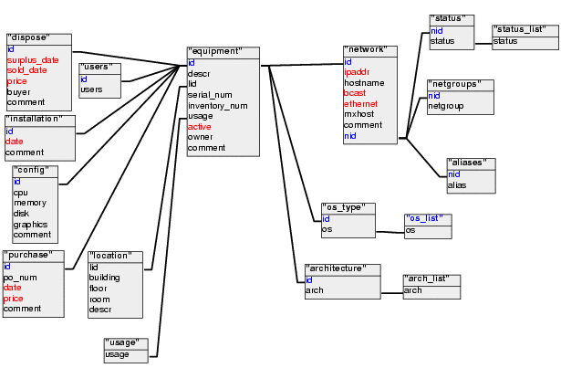

UDB Documentation
Table of Contents
Introduction
User's Guide
Overview
Explain about nids, ids. The difference between network records
and equpiment records. An equipment record is the record of a
physical thing -- something that can be kicked. A network record
can be associated with an equipment record, but it doesn't might
not be. In the former case, a simple user workstation probably
has one equipment record and one network record. A server with
multiple network cards will have one equipment record, but
multiple network records. A dynamically assigned DHCP address has
no equipment associated with it, but will have a network record.
To work with network records, cdb is used. To work
with equipment records, use edb. You can think of
cdb as being the new, improved cdb, and edb as
being the new, (improved?) index.
cdb
cdb is used to manipulate network records. There are
serveral command you can give to cdb:
cdb <command> [argument...]
- insert
- profile
- delete
- modify
- query
cdb insert
cdb profile
cdb delete
NOTE: Unlike the old version of cdb, this version will confirm
that you want to delete the record.
cdb modify
cdb query
edb
edb insert
edb profile
edb delete
edb modify
edb query
edb surplus
edb unsurplus
pgaccess
cdb_make
SQL
Hopefully, almost all of the day-to-day use of the database can be
done with cdb/edb/pgaccess. However, if the need arises, it's
possible to directly access the database using pgsl, like this:
psql -h db.cs.brown.edu udb
Transactions
Whenever you use psql to change the database, it's a good
idea to do it within a "transaction". To start a transaction,
execute:
begin;
at the psql prompt. Now make whatever changes you need to, and
verify that you've changed what you think you have. If
you're happy with the results, make your changes permanent by
running:
commit;
at the psql prompt. If you goofed, and the changes you made had
unintened consiquences, you can cancel the transaction like this:
rollback;
If you are working within a transaction, be sure to
commit before you exit psql, or you changes will be lost
Developer's Guide
CVS Repository
All of the scripts and other files associated with "udb" are in a
CVS repository. The CVSROOT is /tstaff/projects/.CVS, so to
checkout a copy of the latest stuff, run:
cvs -d /tstaff/projects/.CVS co udb
The README file that gets checked out should explain the
directory hierarchy.
The Database
The Schema

Buiding the Database
cdb/edb
cdb_make
I tried to get to clever in my class inheritance, and created a
mess. It works, but it takes forever to find where to make
changes. This should really be fixed.
Why Python?
Okay, I know you're thinking to yourself, "Why the hell didn't he
just user Perl?", so this is my answer.
I started off using Perl. However, as the program grew, I tried
to get more "object orienty", and that lead to an "impedance
mismatch" with the database (I didn't make up that term. It's
apparently a well known problem, which I stumbled across as I
re-invented the wheel). I searched high and low for a Perl
module that would automate the datbase to object mapping, and
came up empty
However, in my searches I ran across "PyDO", which was exactly
what I was looking for, but for the wrong language. Not just
the wrong language, but that screwed up one where whitespace
matters.
After several false starts writing my own, I finally decided to
try python and PyDO. Once I got used to Python, I
loved it, and PyDO did the job very nicely.
Perl versus Python
Don't worry -- I haven't completely gone off the Python deep end.
I still use Perl. In fact, the scripts that build the inital udb
database are written in Perl. For a task that requires lot's of
slinging of strings and regular expressions, Perl is definately
the right tool for the job. On the other hand, Python's object
oriented syntax is nicer, and for a program with anything but the
most simple data structures, I'll use Python.
To Do
Features
- Documentation
- More testing of cdb_make
- GUI
- Test on Windows
- Add -f flag to not confirm update/insert/delete
Bugs
- cdb insert doesn't work with a query argument
Last modified: Thu Oct 30 17:10:43 EST 2003